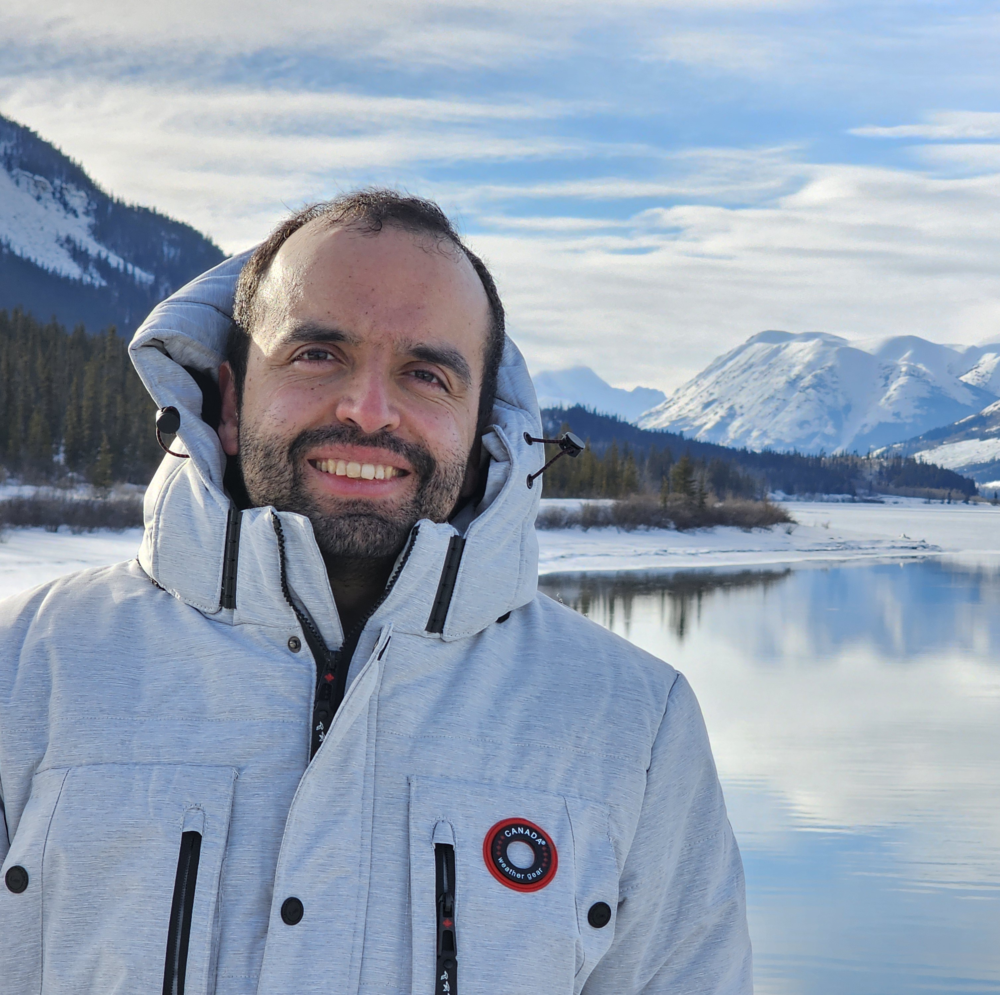

David Alemán Espinosa |
 |
|
I am a PhD candidate in Combinatorics & Optimization at the University of Waterloo, advised by Chaitanya Swamy. Before joining the University of Waterloo, I completed an M.Sc. in Applied Mathematics at ETH Zurich and a dual B.Sc. in Mathematics and Physics at Universidad de los Andes.
My research interests are in Theoretical Computer Science, particularly in Combinatorial Optimization, Approximation Algorithms and Stochastic Optimization. Together with Rian Neogi, Jacob Skitsko, and Noah Weninger, I organize the Combinatorial Optimization Reading Group at the University of Waterloo. A recent version of my CV is here. |
|
|
Approximation Algorithms for Norm-Budgeted Packing Problems
with Sharat Ibrahimpur and Chaitanya Swamy Submitted Cost-Preserving Unsplittable Flows for Fully Planar Instances
with Joseph Poremba In preparation Cost-Preserving Unsplittable Flows for Outerplanar Instances
with Niklas Schlomberg In preparation |
|
|
Pinning on Tight Cuts: Improved Algorithm and Bounds for Unsplittable Multicommodity Flows in Outerplanar Graphs
with Niklas Schlomberg To appear in ICALP 2026 Stochastic Load Balancing with Machine Reservations
with Naveen Garg, Sharat Ibrahimpur, Neil Olver, and Chaitanya Swamy To appear in IPCO 2026 Unsplittable Flow-Cut Gap in Undirected Graphs
with Nikhil Kumar, Joseph Poremba, and Bruce Shepherd SODA 2026 Approximation Algorithms for Correlated Knapsack Orienteering [arXiv]
with Chaitanya Swamy APPROX 2024 To Appear in a special issue of Theory of Computing, devoted to selected papers from APPROX 2024 |